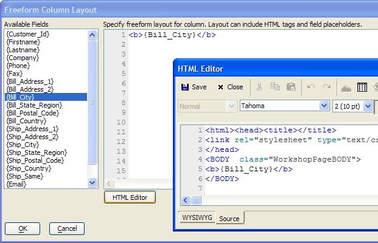
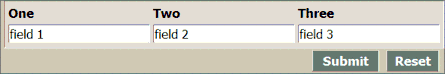

Creating Freeform Layouts
A freeform column layout is a piece of HTML code that can include any legitimate HTML commands and references to any controls already placed into the grid or dialog component.
 Note : The referenced
controls (such as {Bill_City} in the
example below) must not have any HTML formatting.
Note : The referenced
controls (such as {Bill_City} in the
example below) must not have any HTML formatting.
 Note : Freeform column
layouts may not contain Xbasic code. However,
custom controls may use
Xbasic. You can then place the custom control into a freeform layout.
Note : Freeform column
layouts may not contain Xbasic code. However,
custom controls may use
Xbasic. You can then place the custom control into a freeform layout.
To insert a field reference, position the cursor in the HTML text and click the field placeholder in the Available Fields list.
Click HTML Editor to use the resources of the HTML Editor to format the text.
Click OK to save your results or Cancel to quit.

Sample Freeform Layout in a Dialog Component
The technique for creating freeform layouts with multiple fields is the same for grid and dialog components. The steps are:
For all but one of the controls that you want to include in the layout, set the Row (or Column) Properties > Hide row property to TRUE (checked).
For the single control that will not be hidden, set the Row (or Column) Properties > Freeform layout property to TRUE (checked).
Click
 in the Row (or Column) Properties >
Freeform template property to display the Freeform
Column Layout dialog.
in the Row (or Column) Properties >
Freeform template property to display the Freeform
Column Layout dialog.A freeform layout may contain HTML and references to one or more controls. This dialog control contained 3 controls named One, Two, and Three.
The previous code produced this dialog component.
|
<table> <tr><td><b>One</b></td><td><b>Two</b></td><td><b>Three</b></td></tr> <tr><td><b>{One}</b></td><td><b>{Two}</b></td><td><b>{Three}</b></td></tr> </table> |

See Also
Creating a Grid Component, Creating Dialog Components
Supported By
Alpha Five Version 6 and Above
Limitations
Web publishing applications only.